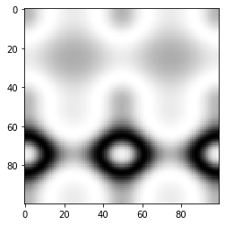

13. Finding contours¶
13.1. Dr. Tirthajyoti Sarkar, Fremont CA 94536¶
We use a marching squares method to find constant valued contours in an image. In skimage.measure.find_contours, array values are linearly interpolated to provide better precision of the output contours. Contours which intersect the image edge are open; all others are closed.
import numpy as np
import matplotlib.pyplot as plt
from skimage import measure
13.2. Construct test data¶
x, y = np.ogrid[-np.pi:np.pi:100j, -np.pi:np.pi:100j]
r = np.sin(np.exp((np.sin(x)**3 + np.cos(y)**2)))
fig, ax = plt.subplots()
ax.imshow(r, interpolation='nearest', cmap=plt.cm.gray)
plt.show()

13.3. Find contours at a fixed threshold level¶
contours = measure.find_contours(r, 0.8)
fig, ax = plt.subplots()
ax.imshow(r, interpolation='nearest', cmap=plt.cm.gray)
for n, contour in enumerate(contours):
ax.plot(contour[:, 1], contour[:, 0], linewidth=2)
ax.axis('image')
ax.set_xticks([])
ax.set_yticks([])
plt.show()